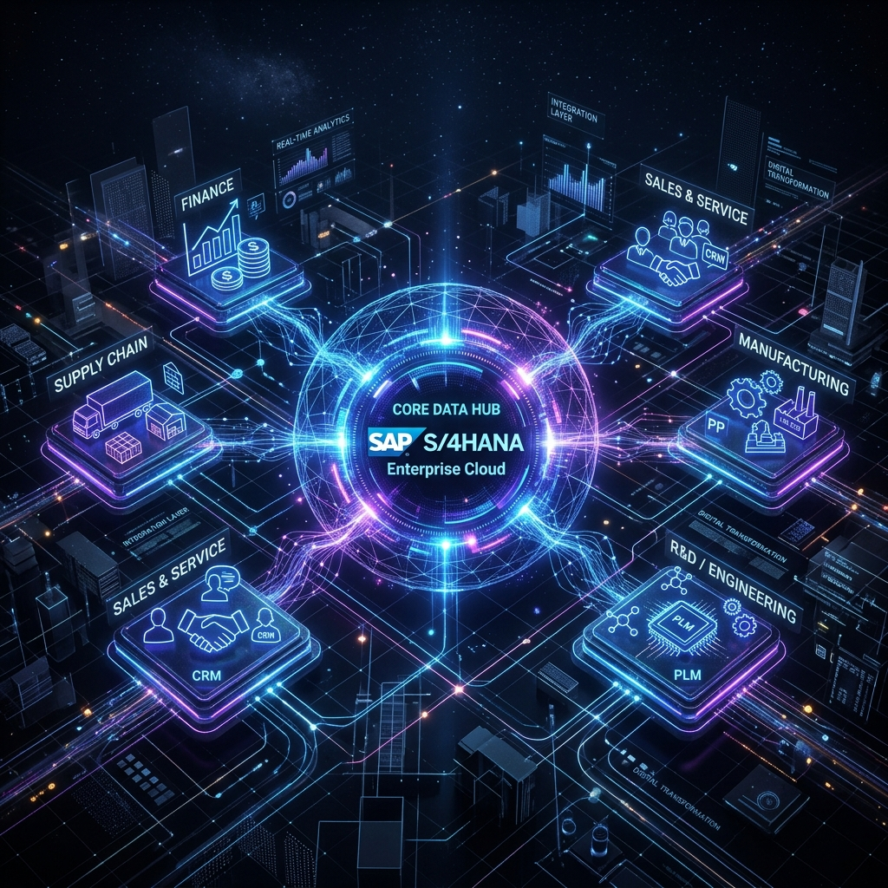

Enterprise SAP S/4HANA,
MCP Servers & AMS Support.
Complete lifecycle execution across Greenfield/Brownfield implementations, custom ABAP & Fiori development, SAP GUI AI integrations, custom SAP MCP servers, and 24/7 Application Management Services (AMS Support).

Implementation, Development, Support & AMS
End-to-end SAP service architecture tailored for global enterprises demanding clean core extensibility and zero-downtime operations.
Enterprise Implementations
Greenfield, Brownfield & Selective Data Transition (SDT) to SAP S/4HANA Cloud and On-Premise environments with automated data migration pipelines.
- ✓ S/4HANA Migration Factory
- ✓ Business Partner Sync
Custom Development
Clean Core side-by-side extensions using SAP BTP, ABAP RESTful Application Programming (RAP), SAP Fiori UI5 apps, and custom microservices.
- ✓ SAP BTP Side-by-Side
- ✓ Custom Fiori UI5 Apps
Technical Support
Basis administration, SAP HANA database optimization, OS/DB migrations, transport management, and security compliance auditing.
- ✓ SAP Basis & HANA Admin
- ✓ Patching & EHP Upgrades
24/7 AMS Support
Managed Application Services with AI incident auto-healing, SLA-backed L1-L4 ticket resolution, and continuous process optimization.
- ✓ Faster TAT
- ✓ AI Agent Self-Healing
Custom SAP MCP Server
Model Protocol Gateway.
Connect LLMs (Claude 3.5, Gemini 1.5, GPT-4) directly to SAP S/4HANA BAPI & OData interfaces safely. Our Model Context Protocol (MCP) server runs as a zero-trust gateway behind enterprise OAuth2/SAML SSO, allowing AI agents to query inventory, create purchase requisitions, and fetch vendor ledgers without data exposure.
SAP GUI-Based AI Integration &
Automated T-Code Assistant.
Bring Generative AI into classic SAP GUI windows. Our ABAP plugin adds an intelligent side-panel inside SAP transactions (`ME21N`, `VA01`, `FB50`), allowing power users to upload PDF invoices, extract line items automatically, and populate SAP fields with 1-click verification.
Explore SAP AI Solutions
We built SAP, S/4HANA, SAP Public Cloud, SAP CALM, MCP servers, and AI-integrated Web & Supplier Portals with flexible deployment models.
SAP & S/4HANA MCP Architecture
Deployed in SAP BTP as a managed cloud service and also available as a local server deployment. Connects AI agents directly to SAP core logic with zero data leaks and strict role-based access.
SAP Public Cloud & SAP CALM
Deployed in SAP BTP as a managed cloud service and also available as a local server deployment. End-to-end Application Lifecycle Management (CALM) integration with automated telemetry and real-time monitoring.
AI Integrated Web & Supplier Portals
Smart supplier registration, OCR invoice extraction, purchase order acknowledgment, and vendor self-service powered by AI agents. Seamlessly wired into SAP BTP and backend ERP modules.
Modernize Your SAP Landscape with Zero Risk
Speak directly with our SAP Certified Solution Architects in Hyderabad, India to plan your S/4HANA migration, SAP MCP integration, or 24/7 AMS support transition.
Schedule SAP Architecture Call →